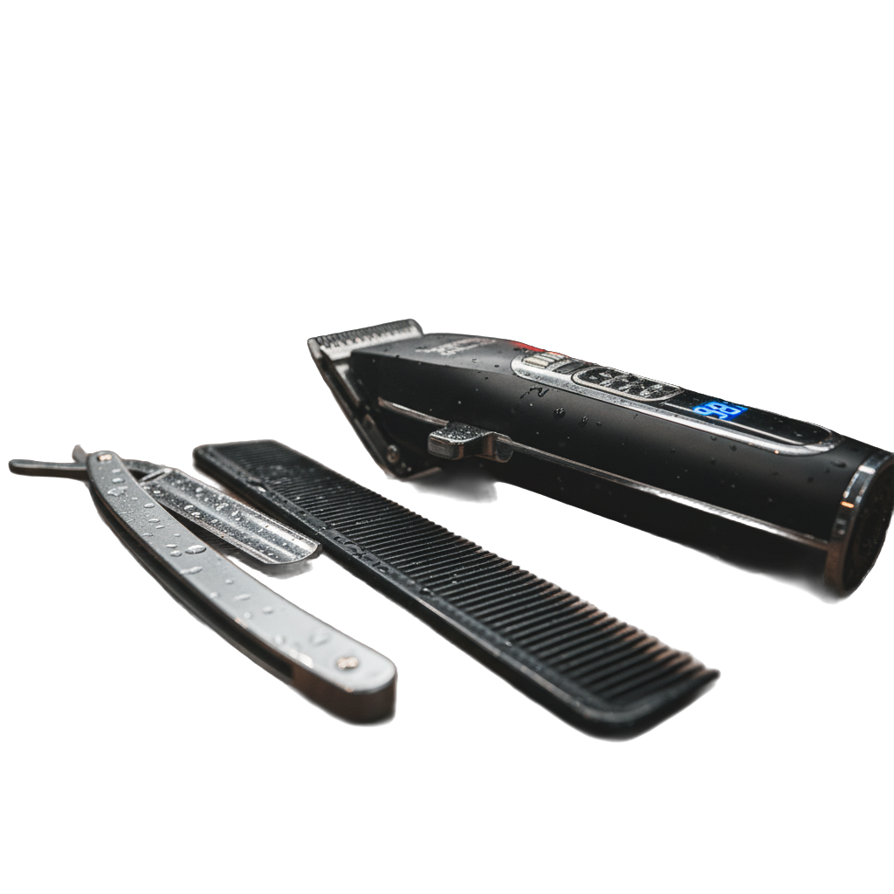

Respect the craft
Recognise the skill, care and professionalism behind great barbering.
IBF 2000 · National membership campaign
For the first time, let’s organise our industry. Join the movement to build professional recognition, shared standards and a national voice for barbering in Ireland.

THE NATIONAL FOUNDING MEMBERSHIP CAMPAIGN
IBF 2000 is a campaign to bring working professional barbers together and build a visible, organised voice for the industry.
See how to get involved ↘Campaign targets and membership terms are subject to the final launch arrangements.
Barbering is a skilled craft, a local business and a source of connection in communities across Ireland.
The Irish Barbers Federation exists to help the industry build its future together. We are bringing barbers, educators and industry partners into a conversation about professional standards, learning, representation and the value of the craft.
The IBF is a voluntary, independent, industry-led body. It does not regulate the trade or control who may work as a barber.
Recognise the skill, care and professionalism behind great barbering.
Support a clear, shared conversation about quality and development.
Make space for the people and businesses shaping the industry.
The IBF is still being set up, and we will say so plainly as we go.
A national campaign, IBF 2000, to bring working barbers together, and a register where barbers can show their interest.
The IBF's legal structure, governance and registered details are still being confirmed, and we will publish them once they are. Membership terms, licence criteria and member benefits will be published before enrolment opens.
We’re developing a practical, collective platform for barbering in Ireland. These are the areas at its heart. More on standards and education.
Help shape a shared approach to professional standards and recognition across the industry.
FOUNDATIONAL WORKChampion learning, practical skills and pathways that help barbers progress throughout their careers.
IN DEVELOPMENTBring industry experience into conversations that affect barbering, business and the people who work in them.
ONGOING DIALOGUECreate opportunities to connect, share ideas and celebrate the craft across Ireland.
GROWING TOGETHERYOUR CRAFT. YOUR INDUSTRY. YOUR VOICE.
Make your membership count for more than a badge. Join a national organisation being built to represent, recognise and support Irish barbers—and have a say in its direction.
IBF 2000 campaign membership fee. Licensed Professional Membership: fee to be confirmed.
Be one of the first 2,000.
Qualifying paid members are intended to receive permanent Founding Professional recognition.
WHAT MEMBERSHIP IS FOR
Your membership adds your voice to the IBF’s representation and engagement with Government and industry stakeholders. A united profession is harder to overlook.
Take your place as an IBF member. Members will be able to apply for the voluntary IBF Professional Barber Licence once the eligibility requirements are published. It is an IBF professional credential, not a statutory or Government licence.
Bring your experience into the development of professional standards and recognition that reflect the skill and responsibility behind the chair.
Be part of the IBF’s work to grow education, continuing professional development, events and career opportunities for barbers.
Help build useful industry research and practical business support for barbers and barbershops.
The IBF is exploring insurance and commercial partnerships to add practical value for members as agreements are established.
The €190 annual fee is the IBF 2000 campaign offer for Standard Membership; the fee for Licensed Professional Membership is to be confirmed. Membership and any IBF credential renew annually; Founding Professional recognition is intended to be permanent for the first 2,000 qualifying paid members. Education, business support, research, and partner offers are being developed and will be identified as they become available; insurance and commercial benefits are subject to partner agreements. Eligibility and confirmed member benefits will be published before enrolment opens.
Membership gives barbers a voice in a national federation. Licensed Professional Membership is being developed as a voluntary step beyond it, for barbers who want their professional standing recognised.
Registering your interest is free and does not commit you to joining. Nothing is paid at this stage.
€190 / year
IBF 2000 campaign offer
Enrolment opening soon
Join as Standard MemberFee to be confirmed
Voluntary · in development
In development
Apply for Professional LicensingThis registers your interest only. It is not an application, and nothing is paid.
| Benefit | Standard | Licensed Professional |
|---|---|---|
| Federation representation | Yes | Yes |
| Communications and member community | Yes | Yes |
| Applicable events and member benefits | Yes | Yes |
| Professional licence | No | On approval |
| Unique licence number and digital credential | No | When launched |
| Public status verification | No | When launched |
| Annual licence renewal | No | Required |
| Annual fee | €190 (IBF 2000 campaign offer) | To be confirmed |
Payment alone never guarantees a licence: a licence is issued only to applicants who meet the published requirements. Fees and terms are subject to final IBF approval.
Standard members will be able to apply for the licence once the criteria and the application process are published. You will not need to rejoin.
Licence applications are intended to be assessed against published requirements, with a reasoned decision and a fair route to ask for a review. We intend to include a route for experienced barbers who do not hold formal qualifications. Details are subject to IBF approval and are not yet published.
The licence is intended to renew every year, alongside membership.
Please note. The IBF Professional Barber Licence is a voluntary IBF credential. It is not a statutory licence to practise barbering in Ireland, it is not Government authorisation or recognition, it is not insurance or proof of cover, and it is not a guarantee of competence.
One profession. One federation. A higher standard together.
Barbering is a skilled profession built on education, experience, creativity and trust. The IBF Professional Barber Licence is being developed to recognise barbers who meet defined requirements and commit to the federation’s professional standards.
The licence is a voluntary IBF credential, not a statutory or Government licence. It is in development and cannot yet be applied for or paid for.
A credential that reflects your skill and your commitment to the craft.
A planned way for clients to confirm your status, once verification is available.
An annual renewal that encourages learning and progression.
Part of a national federation that gives barbers an organised voice.
Barbers who do not hold an IBF licence remain free to practise. The IBF does not regulate the trade.
Proposed, not yet approved
This is the process the IBF is working towards. It is subject to IBF approval and may change before launch.
Eligibility requirements, assessment arrangements and fees will be published before applications open.
No. It is voluntary. The IBF does not regulate the trade or control who may work as a barber.
No. It is an IBF professional credential. It is not a statutory licence and it is not Government authorisation or recognition.
No. A licence is issued only when the published requirements are met. Payment alone never guarantees a licence.
The fee has not been confirmed. Standard Membership is €190 a year as part of the IBF 2000 campaign offer.
The requirements are not yet published. We intend to include a fair route for experienced barbers who do not hold formal qualifications.
No. Insurance is separate from licensing. The IBF is exploring insurance partnerships, and any partner will be named only once a written agreement is in place.
Online verification of licence status is planned for when the licence launches. It is not available yet.
We do not have a launch date. We will publish the criteria and the process before applications open.
Barbering depends on skill, hygiene and trust. The IBF is working towards a shared, voluntary approach to professional standards and development.
We want to help shape a shared approach to professional standards and recognition across the industry. The IBF Professional Barber Licence is intended to be one part of this. It is voluntary, and its criteria are not yet published. Areas such as hygiene, safe working practice, professional conduct and continuing learning are being considered, and nothing is final.
Any scheme must be fair to experienced barbers who do not hold a particular certificate, and must not create unjustified barriers to working in the trade.
We want to champion learning, practical skills and pathways that help barbers progress throughout their careers. We intend to talk to educators, colleges and training providers, and to explore how our work can sit alongside existing Irish qualifications and apprenticeships.
If you are a college, training provider or educator who would like to be part of this conversation, see our partners page or contact us.
About the IBF Licence ↗The IBF is building a constructive voice for the industry.
Our policy and representation work brings the realities of barbering into focus: the skills, businesses, training needs and community role that make up the profession. We aim to support informed discussion with decision-makers and industry partners.
How we approach it ↗The IBF is building a constructive voice for the industry.
Members will be able to shape the IBF's priorities. Register your interest to be kept up to date as the programme develops.
Register your interest ↗Updates, conversations and opportunities from the Irish Barbers Federation.

Every day, barbers build trust, confidence and connection—one conversation at a time.
The IBF is a place for that community to come together: to share experience, learn from one another and help the craft keep moving forward.
Find your place in the community ↗THE NEXT CHAPTER IS OURS TO SHAPE
Interested in membership, training, events or working with the IBF? We’d like to hear from you.
Email us at info@barbersfederationofireland.com and we’ll get back to you.
Send us an email ↗Looking to join? Register your interest. Working with a business or training provider? See Partners.
IRELAND · THE BARBERING COMMUNITY